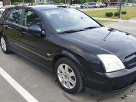

Welcome to benzinas
Benzinas, benzino kaina. Rekvizitai.lt
2020.10.29 11:20Lietuvos įmonių katalogas: Vilnius , Kaunas , Klaipėda , Šiauliai , Panevėžys , Alytus . Detali paieška Įmonių kodai Duomenų rinkmenos TOP įmonės 2020 Pagalba Reklama Langai | Durys Kontaktai
Žaliavos: Benzinas
Valiutų kursai Akcijų kainos Žaliavų kainosŽaliavos kaina: Benzinas
Kitos žaliavos Benzinas 2020 m. rugsėjo mėn. kainavo 1,23 JAV dolerių už galoną . Palyginus su rugpjūčio mėn. kaina nukrito -1,60% (-0,02 JAV dolerių už galoną) . Jei norite matyti diagramą, naršyklėje įjunkite JavaScript ir Adobe Flash. Benzino kaina, Niujorkas.Benzinas (it. benzina, lot. bonzoë „benzoinė derva“) – lengvoji naftos distiliacijos frakcija, susidedanti iš angliavandenilių (alkanų, alkenų, arenų, naftenų).
Lakus, nuodingas, lengvai užsidegantis bespalvis skystis, gaunamas tiesiogiai distiliuojant naftą. Skirstomas į neetiliuotą (bešvinį) ir etiliuotą (su švinu, nuodingesnis), apibūdinamas oktaniniu skaičiumi, frakcine sudėtimi, gebėjimu oksiduotis, rūgštingumu, sieringumu, spalva.
Naudojamas kaip transporto priemonių degalai (automobilinis žieminis bei vasarinis, taip pat aviacinis benzinas), tirpiklis, cheminiam valymui, aliejaus rafinavimui. Iki vidaus degimo variklio išradimo benzinas naudotas gydymui nuo utėlių. Dažniausiai naudojamas 92, 95 ir 98 oktaninio skaičiaus benzinas. Būna vasarinis ir žieminis. Jie skiriasi garingumu, žieminio garingumas būna didesnis, vasarinio – mažesnis. Taip pat jis būna etiliuotas ir neetiliuotas. Įvairių markių benzinas gaunamas sumaišius skirtingų gavybos būdų ir frakcijų komponentus. Benzinas naudojamas kaip degalai, lakų, dažų ir dervų tirpiklis, eterinių aliejų ekstrahentas. Juo valomi drabužiai, plaunamos detalės. Benzinas (ypač etiliuotas) yra nuodingas. 1 Trojos uncija lygi 31,1034768 gramo.
1 uncija lygi 28,3495231 gramo.
1 barelis lygus 158,9873 litro.
1 svaras lygus 453,59237 gramo.
1 galonas lygus 3,78541178 litro.
1 MMBTU (milijonas britų šiluminių vienetų) lygus maždaug 27,9 kubiniams metrams. Kitos žaliavos
Prisijungti prie katalogo
Partneriai
Žaliavų kainos pasaulyje
Sidabras 25,74 -4,67% Dyzelis 1,12 -8,94% Dujos (JAV) 1,92 -16,16% Vištiena 1,47 -2,00% Apelsinai 0,61 -1,61% Varis 6704,90 +3,17% Ryžiai 507,00 +0,40% Cukrus 0,59 -1,67% Daugiau žaliavų kainųValiutų kursai
JAV doleris USD 0,8527 € Svaras sterlingų GBP 1,1030 € Lenkijos zlotas PLN 0,2164 € Rusijos rublis RUB 0,0108 € Baltarusijos rublis BYN 0,3253 € Kinijos juanis CNY 0,1268 € Šveicarijos frankas CHF 0,9352 € Daugiau valiutų kursų Lietuvos bankas, 2020-10-29Akcijų kainos
General Electric 7,42 +4,51% CBS 40,77 +3,63% Symantec 23,75 +1,45% Red Hat 187,71 0,00% Google 1516,62 -5,46% Facebook 267,67 -5,51% NVIDIA 505,08 -5,75% Xerox 17,23 -6,97% Daugiau akcijų kainų © 2008-2020 Rekvizitai.ltLT EN DE RU FR ES PL CN
Lietuvos imones, įmonių katalogas, duomenys Detali paieška Pašto kodai Taksi Lietuvoje Valiutų kursai Įmonių kodai PVM kodai Įmonių pranešimai Bankrutavusios įmonės Ekonomikos rodikliai Orai Įstatymai Dokumentų pavyzdžiai Akcijų kainos Žaliavų kainos Viešieji pirkimai Apklausos Verslo naujienos Naudinga informacija Patarimai Skundai Nauja įmonė Taisyklės Pagalba Privatumo politika Duomenų rinkmenos Stipriausi Lietuvoje Reklama Kontaktai
